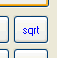

Squares and Square Roots
First learn about Squares, then Square Roots are easy.
How to Square A Number
To square a number: multiply it by itself.
Example: What is 3 squared?
| 3 Squared | = |  |
= 3 × 3 = 9 |
"Squared" is often written as a little 2 like this:

This says "4 Squared equals 16"
(the little 2 says
the number appears twice in multiplying)
Squares From 02 to 62
| 0 Squared | = | 02 | = | 0 × 0 | = | 0 |
| 1 Squared | = | 12 | = | 1 × 1 | = | 1 |
| 2 Squared | = | 22 | = | 2 × 2 | = | 4 |
| 3 Squared | = | 32 | = | 3 × 3 | = | 9 |
| 4 Squared | = | 42 | = | 4 × 4 | = | 16 |
| 5 Squared | = | 52 | = | 5 × 5 | = | 25 |
| 6 Squared | = | 62 | = | 6 × 6 | = | 36 |
| The squares are also on the Multiplication Table: |
 |
Negative Numbers
We can also square negative numbers.
Example: What happens when we square (−5) ?
Answer:
(−5) × (−5) = 25
(because a negative times a negative gives a positive)
That was interesting!
When we square a negative number we get a positive result.
Just the same as squaring a positive number:

(For more detail read Squares and Square Roots in Algebra)
Square Roots
A square root goes the other way:

3 squared is 9, so a square root of 9 is 3
A square root of a number is ...
A square root of 9 is ...
It is like asking:
What can we multiply by itself to get this?
|
To help you remember think of the root of a tree: "I know the tree, but what root made it?" In this case the tree is "9", and the root is "3". |
Here are some more squares and square roots:
| 4 | 16 | |
| 5 | 25 | |
|
6 |
36 | |
|
7 |
49 | |
Decimal Numbers
It also works for decimal numbers.
Try the sliders below (note: '...' means the decimals continue on forever):
Using the sliders:
- What is the square root of 8?
- What is the square root of 9?
- What is the square root of 10?
- What is 1 squared?
- What is 1.1 squared?
- What is 2.6 squared?
Negatives
We discovered earlier that we can square negative numbers:
Example: (−3) squared
(−3) × (−3) = 9
And of course 3 × 3 = 9 also.
So the square root of 9 could be −3 or +3
Example: What are the square roots of 25?
(−5) × (−5) = 25
5 × 5 = 25
So the square roots of 25 are −5 and +5
The Square Root Symbol
| This is the special symbol that means "square root",
it is sort of like a tick, and actually started hundreds of years ago as a dot with a flick upwards. It is called the radical, and always makes mathematics look important! |
We use it like this:

and we say "square root of 9 equals 3"
Example: What is √25?
25 = 5 × 5, in other words when we multiply 5 by itself (5 × 5) we get 25
So the answer is:
√25 = 5
But wait a minute! Can't the square root also be −5? Because (−5) × (−5) = 25 too.
- Well the square root of 25 could be −5 or +5.
- But when we use the radical symbol √ we only give the positive (or zero) result.
Example: What is √36 ?
Answer: 6 × 6 = 36, so √36 = 6
Perfect Squares
The Perfect Squares (also called "Square Numbers") are the squares of the integers:
| Perfect Squares |
|
| 0 | 0 |
| 1 | 1 |
| 2 | 4 |
| 3 | 9 |
| 4 | 16 |
| 5 | 25 |
| 6 | 36 |
| 7 | 49 |
| 8 | 64 |
| 9 | 81 |
| 10 | 100 |
| 11 | 121 |
| 12 | 144 |
| 13 | 169 |
| 14 | 196 |
| 15 | 225 |
| etc... |
Try to remember them up to 12.
Calculating Square Roots
It is easy to work out the square root of a perfect square, but it is really hard to work out other square roots.
Example: what is √10?
Well, 3 × 3 = 9 and 4 × 4 = 16, so we can guess the answer is between 3 and 4.
- Let's try 3.5: 3.5 × 3.5 = 12.25
- Let's try 3.2: 3.2 × 3.2 = 10.24
- Let's try 3.1: 3.1 × 3.1 = 9.61
- ...
Getting closer to 10, but it will take a long time to get a good answer!
|
At this point, I get out my calculator and it says: 3.1622776601683793319988935444327 But the digits just go on and on, without any pattern. So even the calculator's answer is only an approximation ! |
Note: numbers like that are called Irrational Numbers, if you want to know more.
The Easiest Way to Calculate a Square Root
|  | Use your calculator's square root button! |
And also use your common sense to make sure you have the right answer.
A Fun Way to Calculate a Square Root
There is a fun method for calculating a square root that gets more and more accurate each time around:
| a) start with a guess (let's guess 4 is the square root of 10) | |
 |
b) divide by the guess (10/4 = 2.5) c) add that to the guess (4 + 2.5 = 6.5) d) then divide that result by 2, in other words halve it. (6.5/2 = 3.25) e) now, set that as the new guess, and start at b) again |
- Our first attempt got us from 4 to 3.25
- Going again (b to e) gets us: 3.163
- Going again (b to e) gets us: 3.1623
And so, after 3 times around the answer is 3.1623, which is pretty good, because:
3.1623 x 3.1623 = 10.00014
Now ... why don't you try calculating the square root of 2 this way?
How to Guess
What if we have to guess the square root for a difficult number such as "82,163" ... ?
In that case we could think "82,163" has 5 digits, so the square root might have 3 digits (100x100=10,000), and the square root of 8 (the first digit) is about 3 (3x3=9), so 300 is a good start.
Square Root Day
The 4th of April 2016 is a Square Root Day, because the date looks like 4/4/16
The next after that is the 5th of May 2025 (5/5/25)